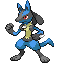Você acorda almejando poder realizar o sonho de encontrar um lucario para que ele se torne seu amigo. será que você consegue?
Ahh o mundo pokémon, tão belo, tão misterioso.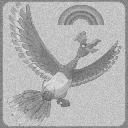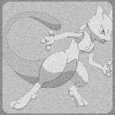
Nunca se sabe o que esperar desse mundo tão cheio de aventuras.
Seja no chão,
Seja na água,
Seja no ar,
Eles sempre estarão lá...
os pokémons!
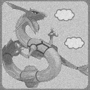
Porém, você não faz a menor ideia de onde procurar por um. Então você decide sair em busca de um lucario.
Muitas dúvidas te assolam, como se você irá conseguir ou não, mas você deixa as preocupações de lado e resolve sair numa aventura!
História:
Você, um jovem entusiasta no mundo dos pokémons, decide por algum motivo que gostaria de encontrar um lucario para ter como amigo, ou seja,capitulá-lo.Porém, você não faz a menor ideia de onde procurar por um. Então você decide sair em busca de um lucario.
Muitas dúvidas te assolam, como se você irá conseguir ou não, mas você deixa as preocupações de lado e resolve sair numa aventura!
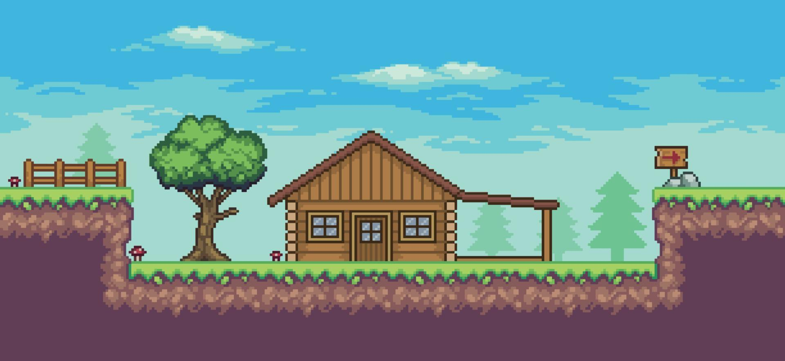Você acorda em sua nobre casa que fica em uma zona bem afastada da cidade.
Você decide que é hora de explorar o mundo ao redor na busca por um Lucario.
Depois de andar por um tempo, você chega em uma bifurcação, na qual precisa escolher se irá para a floresta, ou para o campo.
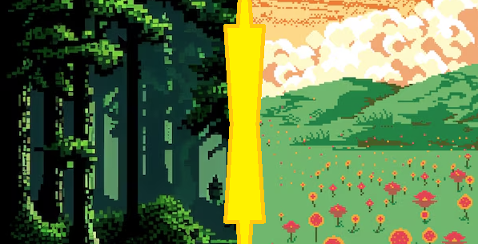
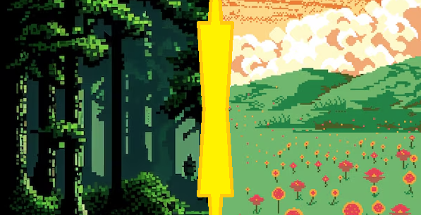
 O que você escolhe?
O que você escolhe?
Chegando num campo aberto, você avista muitos pokémons
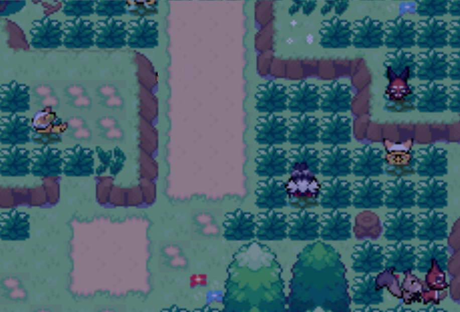 mas nenhum Lucario por perto.
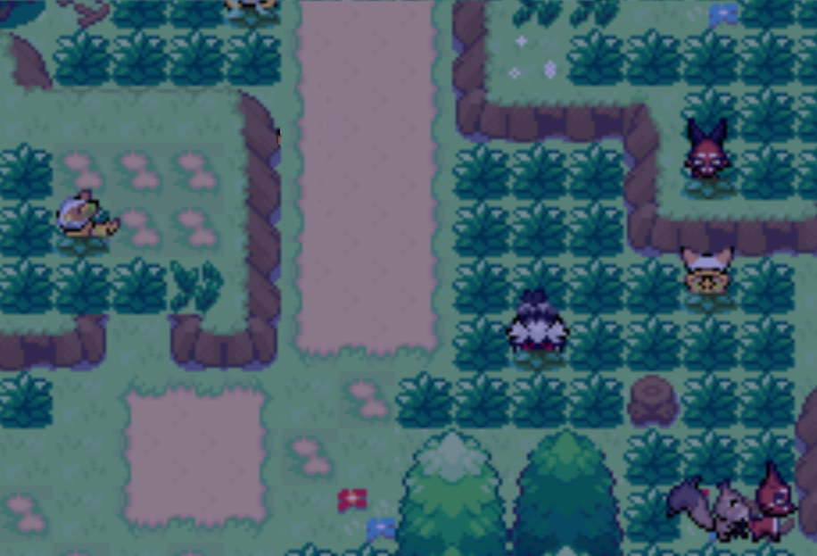 mas nenhum Lucario por perto.
Você quer continuar por esse caminho ou voltar?
Continuando a caminhada pelo campo, você ainda não encontra nenhum Lucario por perto.
A aparência desse local é bem bonita.
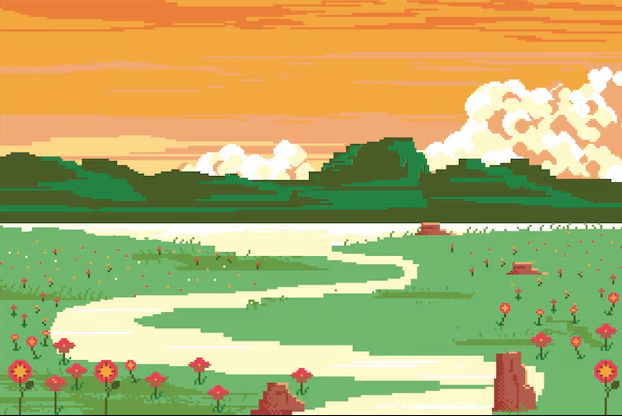 Você sente uma enorme vontade de continuar.
A aparência desse local é bem bonita.
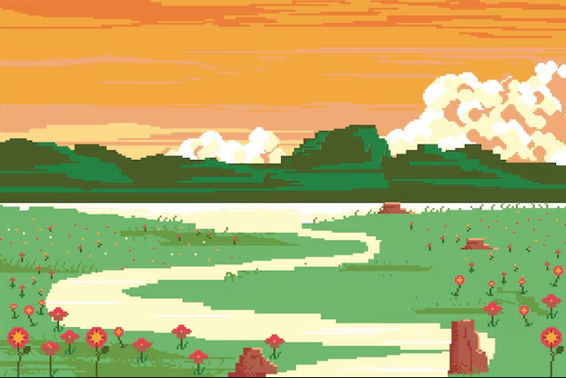 Você sente uma enorme vontade de continuar.
O que você vai fazer?
Depois de muito caminhar, você chega em uma parte do campo não muito explorada, que parece te assustar um pouco.
Andar por lugares desconhecidos nunca é uma boa opção.
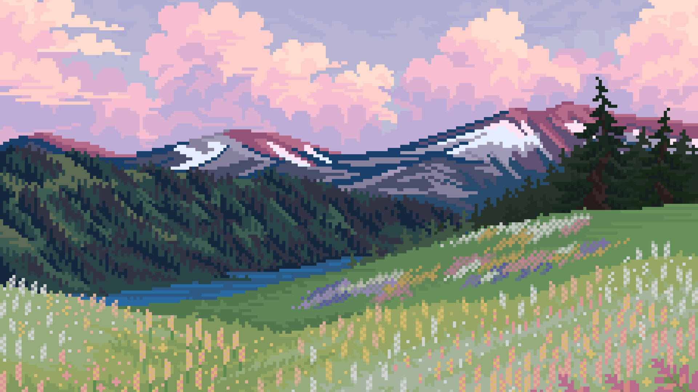 Você começa a questionar se seu sonho está se tornando um pesadelo, e pensa em voltar.
Andar por lugares desconhecidos nunca é uma boa opção.
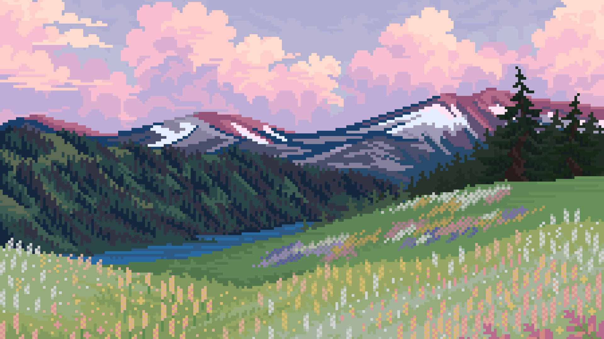 Você começa a questionar se seu sonho está se tornando um pesadelo, e pensa em voltar.
O que você vai fazer?
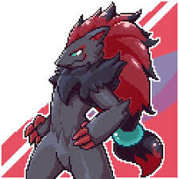Você acaba por dar de cara com um zoroark selvagem, que não parece querer muito conversar com você.
Ele ameaça você.
Você precisa fugir correndo para a floresta antes que zoroark te ataque.
Ele ameaça você.
Você precisa fugir correndo para a floresta antes que zoroark te ataque.
Corra.
Você precisa selecionar todos os ataques que são eficazes contra zoroark, boa sorte!!!
Você não devia ter feito isso
Você só poderá atacar se selecionar quais desses movimentos são eficazes contra zoroark.
Você só poderá atacar se selecionar quais desses movimentos são eficazes contra zoroark.
Este é o fim.
Você não deveria ter atacado um pokémon! Como resultado... zoroark te atacou, te deixando com alguns machucados.
Você corre rapidamente de volta para sua casa, sendo obrigado a deixar sua busca de lado.
Você corre rapidamente de volta para sua casa, sendo obrigado a deixar sua busca de lado.
Não foi possível conectar ao servidor (0xc0000000142). Aguarde enquanto o windows encontra uma solução para o problema.
Você corre sem parar para a floresta...
Chegando na floresta, você se depara com um cenário um tanto quanto medonho...
Você começa a ficar com medo, porém você não pode mais recuar.
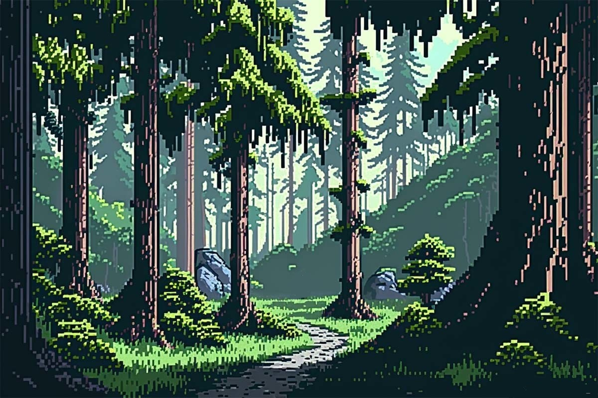
Você começa a ficar com medo, porém você não pode mais recuar.
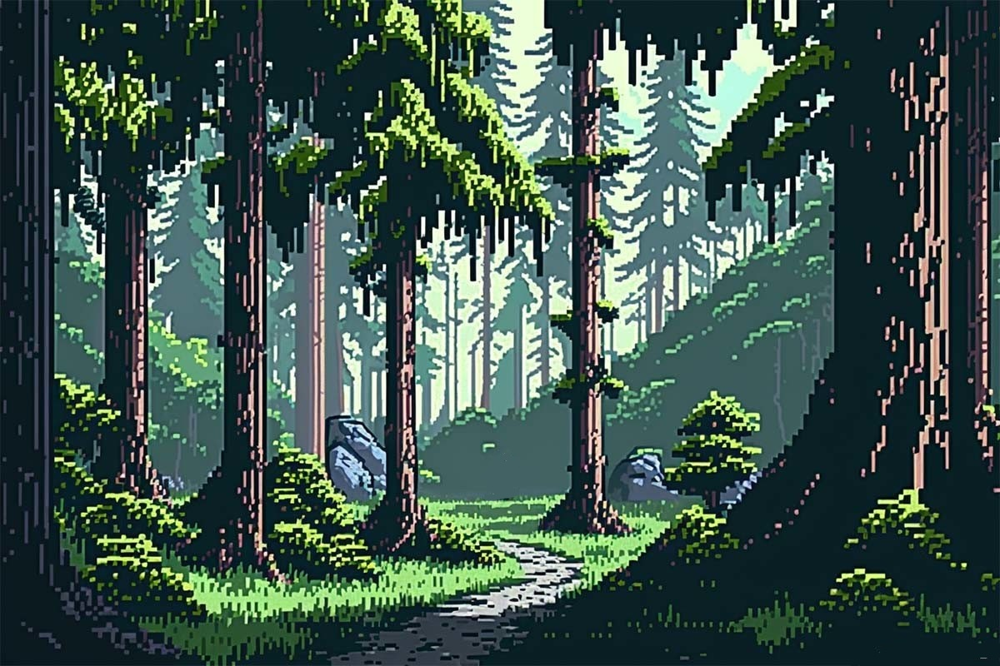
Entrando na floresta, você se depara com inúmeros caminhos que você pode explorar.
você pode explorar todos os caminhos que quiser.
Quando você se depara com essa floresta, você se determina a não entrar nela, por medo.
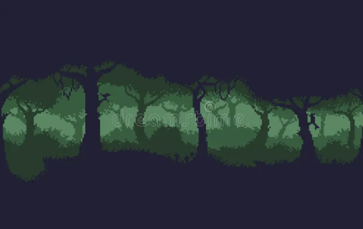 Numa floresta tão escura e medonha dessa nunca se sabe o que pode acontecer.
Essa é uma bonita floresta, porém você resolve não entrar nela por receio de se perder e não conseguir sair
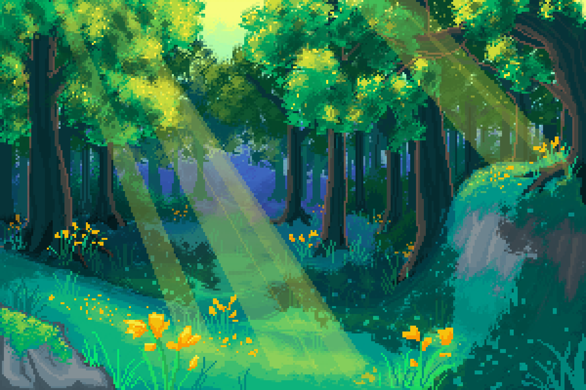Isso que acontece quando se sai de casa sem bússola...
Esse pedaço da floresta te deixou com receios estranhos, então você decide não ir por lá.
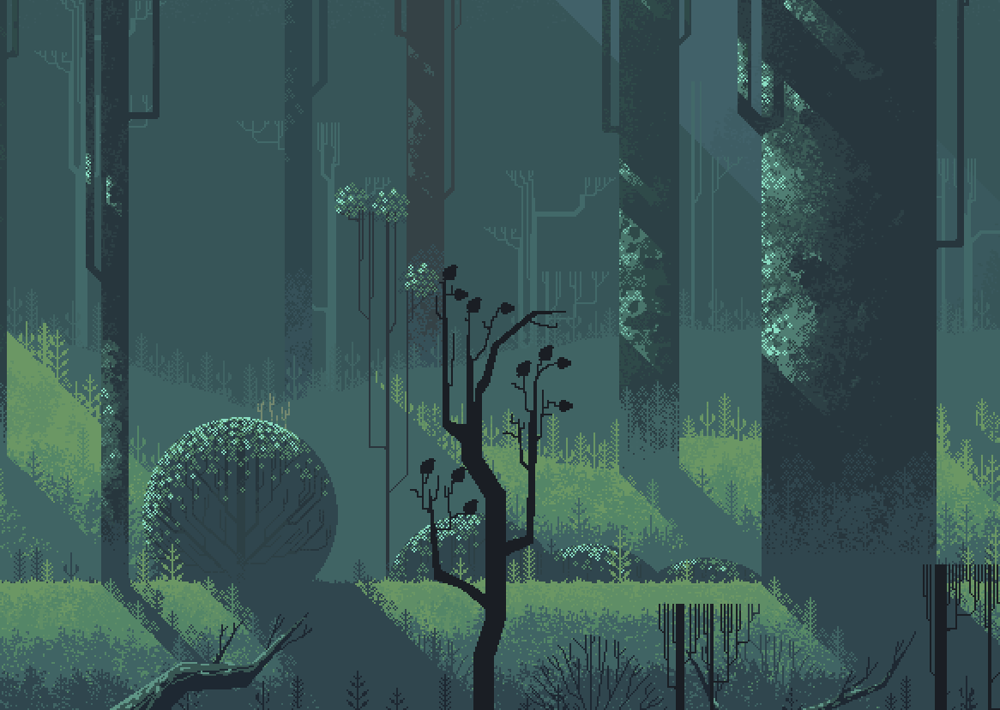Imagina morar nesse lugar...
No fim desse caminho você vê uma caverna.
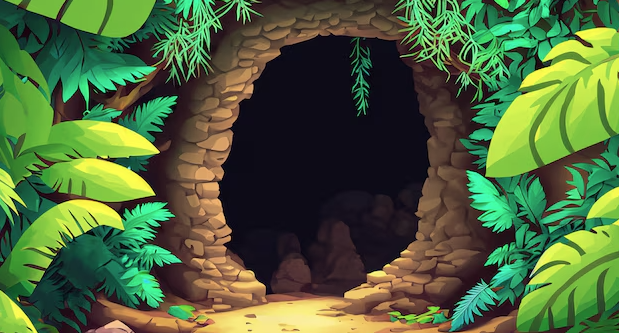 Por algum motivo você sente uma grande vontade de entrar nela.
você pode explorar todos os caminhos que quiser.
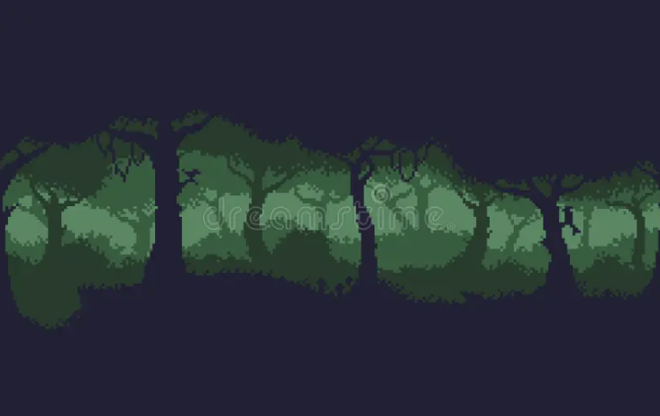 Numa floresta tão escura e medonha dessa nunca se sabe o que pode acontecer.
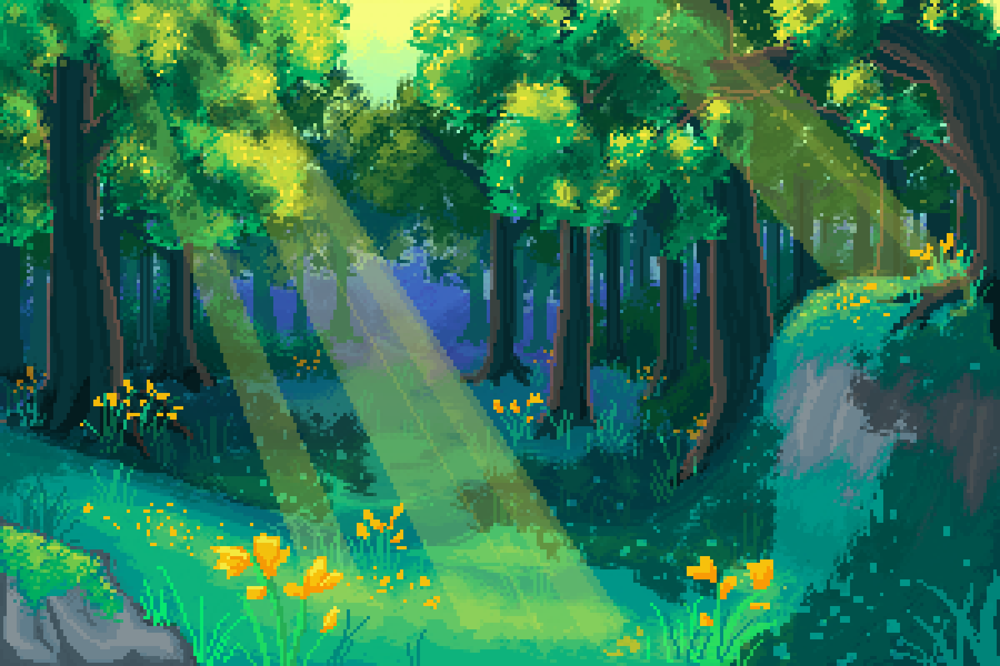
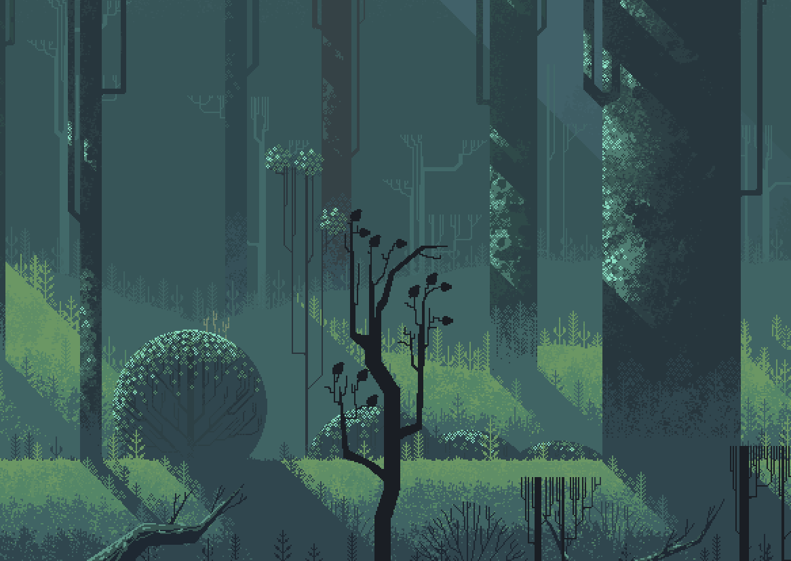
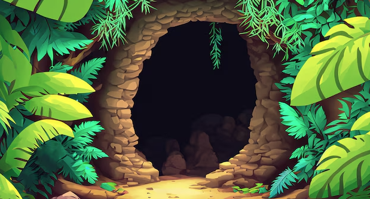 Por algum motivo você sente uma grande vontade de entrar nela.
Não foi possível carregar o conteúdo dessa guia. (0xc000000404)
Assim que você entra na caverna, você ouve um barulho bem alto de algo desmoronando.
Você olha para trás e vê que a entrada na qual você acabou de entrar desabou, ou seja, você está preso na caverna.

Você fica em pânico, porém, não há nada que possa sem feito além de você continuar avançando na mesma...
Você olha para trás e vê que a entrada na qual você acabou de entrar desabou, ou seja, você está preso na caverna.
Você fica em pânico, porém, não há nada que possa sem feito além de você continuar avançando na mesma...
Depois de avançar um pouco na caverna, você começa a ouvir passos de alguém além de você.
Conforme você ia avançando na caverna, o barulho dos passos aumentava.
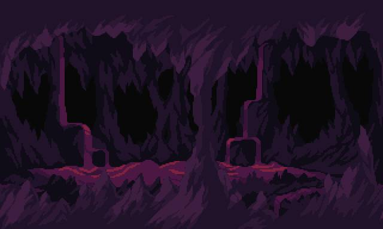
Espera... tem algo ali na frente...
Conforme você ia avançando na caverna, o barulho dos passos aumentava.
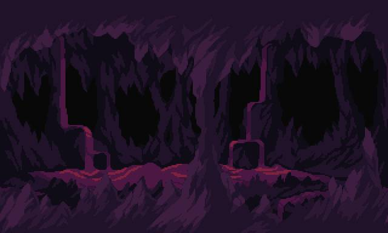
Espera... tem algo ali na frente...
O que é aquilo???
Não pode ser.......
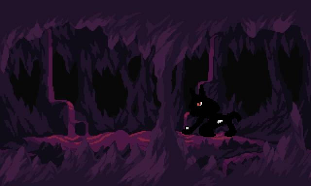
Não pode ser.......
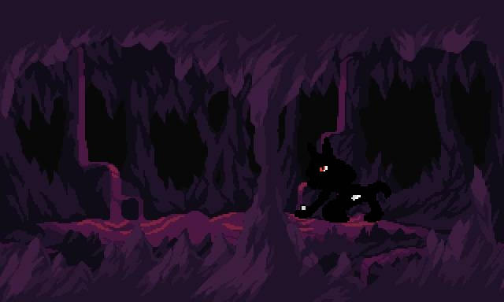
Eu não acredito...
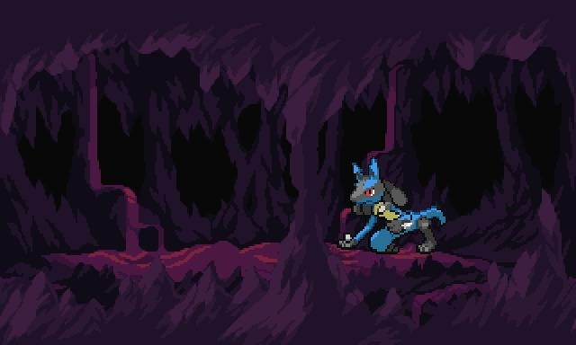
Um... LUCARIO????
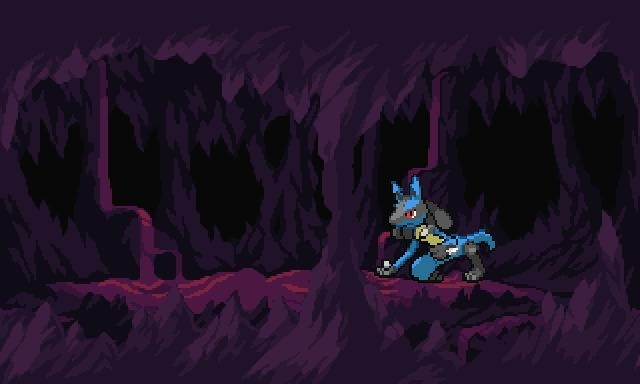
Um... LUCARIO????
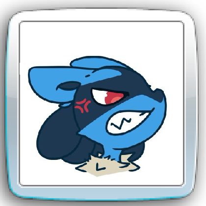
QUEM é você, e o que está fazendo aqui??????
QUEM é você, e o que está fazendo aqui??????
OH MINHA NOSSA UM LUCARIO FALANTE!!!! eu não acredito....... isso é um sonho, não é possível
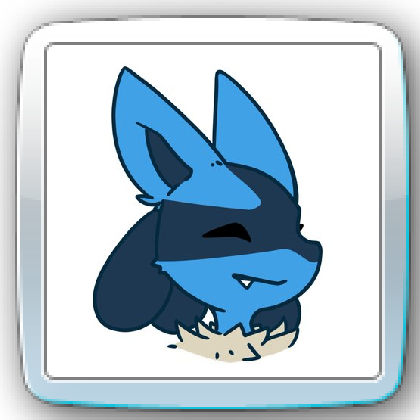
Não precisa surtar meu jovem, eu sei fazer muitas outras coisas além de falar!
Não precisa surtar meu jovem, eu sei fazer muitas outras coisas além de falar!
Nossa... Eu estou incrédulo sobre isso, eu nem acredito que consegui encontrar um lucario nesse lugar.
NÃO MUDE DE ASSUNTO! o que você está fazendo aqui?
Calma... isso é uma longa história, mas vou resumir: eu decidi sair em busca de um lucario, e quando eu estava explorando essa floresta, eu acabei por encontrar essa caverna, porém quando entrei nela, a mesma desmoronou, e fiquei sem saída, então vim andando até aqui e encontrei você!
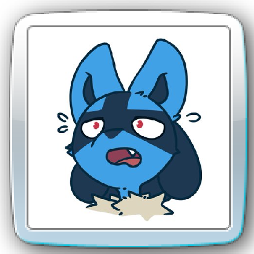
Puxa..... que história...
Mas como assim você saiu em minha busca?
Puxa..... que história...
Mas como assim você saiu em minha busca?
Há muito tempo eu tinha o sonho de encontrar um lucario para poder ser meu amigo...
porém nunca consegui encontrar. Até que encontrei você agora, e você ainda fala! isso é incrível...
porém nunca consegui encontrar. Até que encontrei você agora, e você ainda fala! isso é incrível...
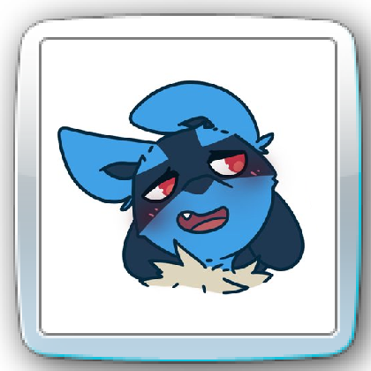
Quer dizer que você sempre teve o sonho de encontrar um lucario para ser seu amigo??
Bem... o que posso dizer sobre isso....... eu estive vivendo todos esses tempos nessa caverna, sem amigos.
Quer dizer que você sempre teve o sonho de encontrar um lucario para ser seu amigo??
Bem... o que posso dizer sobre isso....... eu estive vivendo todos esses tempos nessa caverna, sem amigos.
Puxa.......
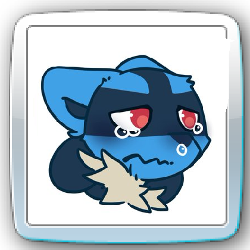
Eu sempre vivi sozinho.
As vezes me faz falta um amigo.
Eu sempre vivi sozinho.
As vezes me faz falta um amigo.
Ah lucario... vem ser meu amigo! eu sei que nós poderiamos viver grandes aventuras juntos!
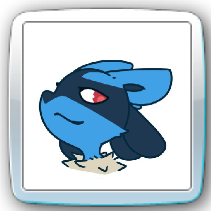
Ahwww, você está falando sério?
Eu adoraria!!!!! pelo menos assim eu deixaria de viver sozinho.
Ahwww, você está falando sério?
Eu adoraria!!!!! pelo menos assim eu deixaria de viver sozinho.
Puxa.. eu nem sei o que dizer, você é incrível!
Ahwww, não fala assim mestre!
hahahahaha, você é muito divertido, mas então, você consegue achar uma saida dessa caverna?
Claro que consigo! vou quebrar as rochas que desmoronaram na entrada!
Você é muito forte, é o melhor dos tipo lutador e aço!
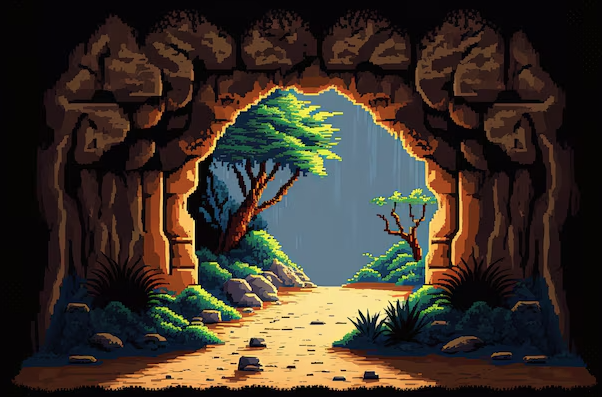
Aqui estamos nós mestre!
Aqui estamos nós mestre!
Agora podemos ir pra casa!!!!
E assim, o jovem entusiasta determinado a encontrar um lucario conseguiu enfim realizar o seu sonho.
Com isso, podemos dizer para que você nunca desista dos seus sonhos, pois tudo aquilo que você deseja, se você lutar, pode se tornar realidade!
Com isso, podemos dizer para que você nunca desista dos seus sonhos, pois tudo aquilo que você deseja, se você lutar, pode se tornar realidade!
Se você chegou até aqui, é sinal que gostou do projeto, eu agradeço por ter explorado a este projeto!
Se tiver gostado, por favor dê um feedback :)
Autor: Rodrigo
Se tiver gostado, por favor dê um feedback :)
Autor: Rodrigo